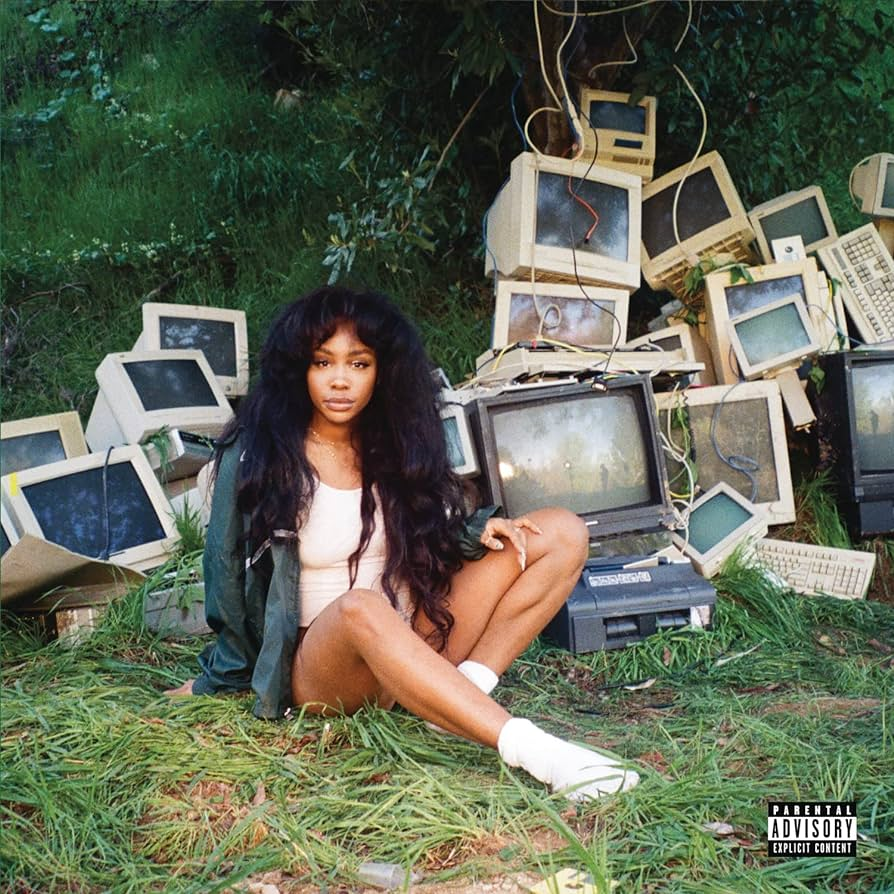
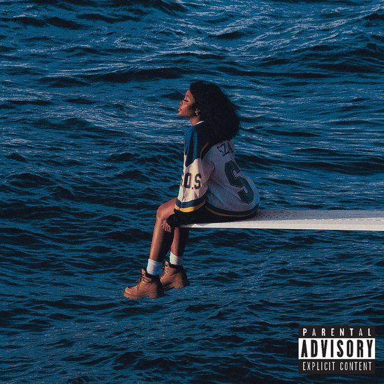
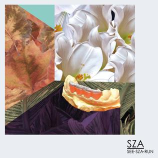

Discrografie
- Z
- Jaar: 2014
- Genre: R&B
- Tracklist
- Ur - 3:55
- Childs Play - 3:36
- Julia - 3:39
- Warm Winds - 5:50
- Hi Jack - 3:42
- Green Mile - 3:34
- Babylon - 3:54
- Sweet November - 4:03
- Shattered Ring - 4:05
- Omega - 4:23

- ctrl
- Jaar: 2017
- Genre: Funk/Soul/R&B
- Tracklist
- Supermodel - 3:01
- Love Galore - 4:35
- Doves In the Wind - 4:26
- Drew Barrymore - 3:51
- Prom - 3:16
- The Weekend - 4:32
- Go Gina - 2:41
- Garden (Say It Like Dat) - 3:28
- Broken Clocks - 3:51
- Anything - 2:29
- Wavy (Interlude) - 1:15
- Normal Girl - 4:13
- Pretty Little Birds - 4:05
- 20 Something - 3:18

- SOS
- Jaar: 2022
- Genre: Funk/Soul/R&B
- Tracklist
- SOS - 1:58
- Kill Bill - 2:34
- Seek & Destroy - 3:24
- Low - 3:02
- Love Language - 3:04
- Blind - 2:31
- Used - 2:27
- Snooze - 3:22
- Notice Me - 2:41
- Gone Girl - 4:05
- Smoking On My Ex Pack - 1:24
- Ghost In The Machine - 3:39
- F2F - 3:06
- Nobody Gets Me - 3:01
- Conceited - 2:32
- Special - 2:39
- Too Late - 2:45
- Far - 3:01
- Shirt - 3:02
- Open Arms - 4:00
- I Hate U - 2:56
- Good Days - 4:41
- Forgiveless - 2:22

- see.SZA.run
- Jaar: 2012
- Genre: Electronic/Hip Hop,Funk/Soul,Pop
- Tracklist
- Bed - 4:19
- Euphraxia - 3:20
- Advil - 3:02
- Time Travel Undone - 3:06
- Crack Dreams - 3:01
- Country - 4:28
- Once Upon A High - 2:51
- S
- Jaar: 2012
- Genre: Electronic/Hip Hop,Funk/Soul,Pop
- Tracklist
- Castles - 3:02
- Terror.Dome - 4:26
- Aftermath - 3:38
- The Odyssey - 3:22
- Pray - 3:18
- Ice.Moon - 3:10
- Wings - 4:26
- Kismet (Outro) - 2:47